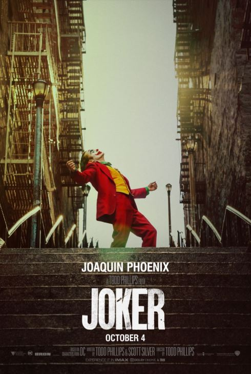

|
Joker “Put on a happy face…” Gotham City in de jaren 80. Een clown, Arthur Fleck genaamd, voelt zich uitgekotst en verstoten door de maatschappij. Geleidelijk aan wordt hij krankzinnig en ontpopt hij zich van vriendelijke, vrolijke clown tot schurk, beter bekend als 'de Joker'. Iemand die kickt op haat en het creëren van chaos. |
 |
| "> | |